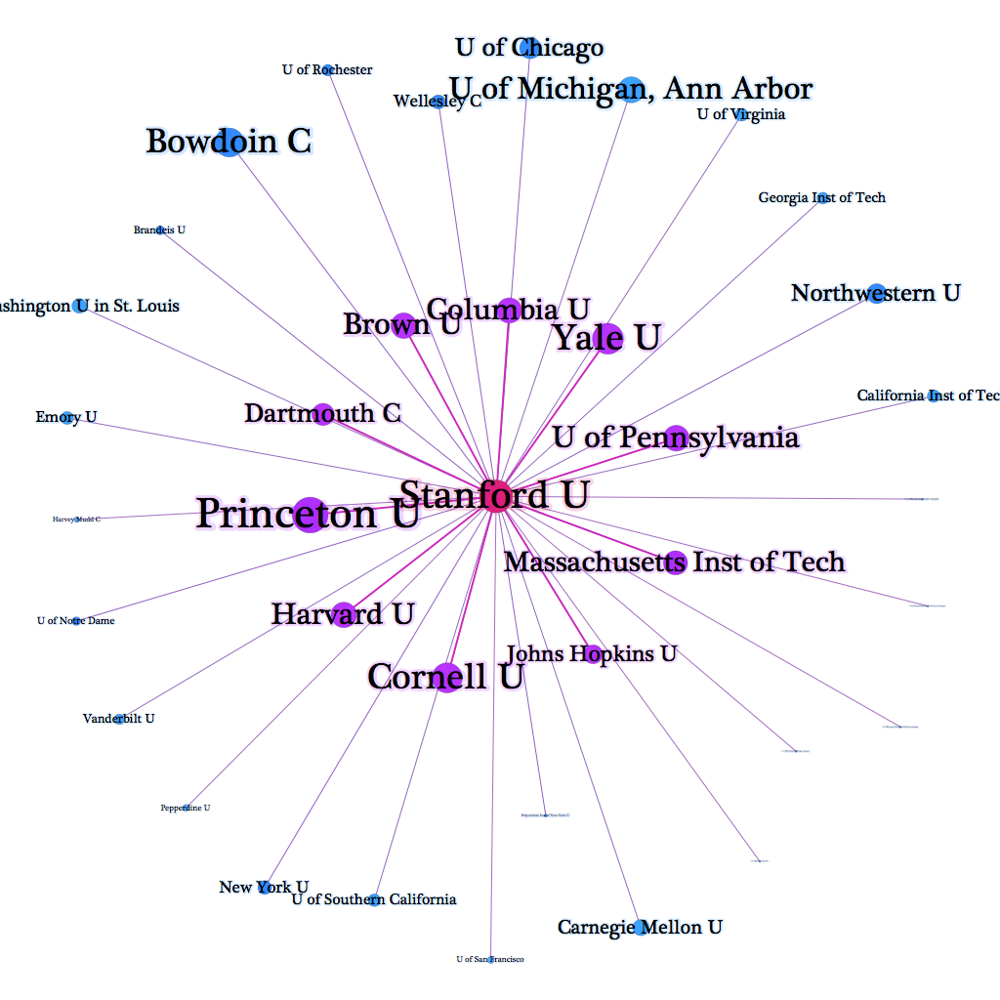
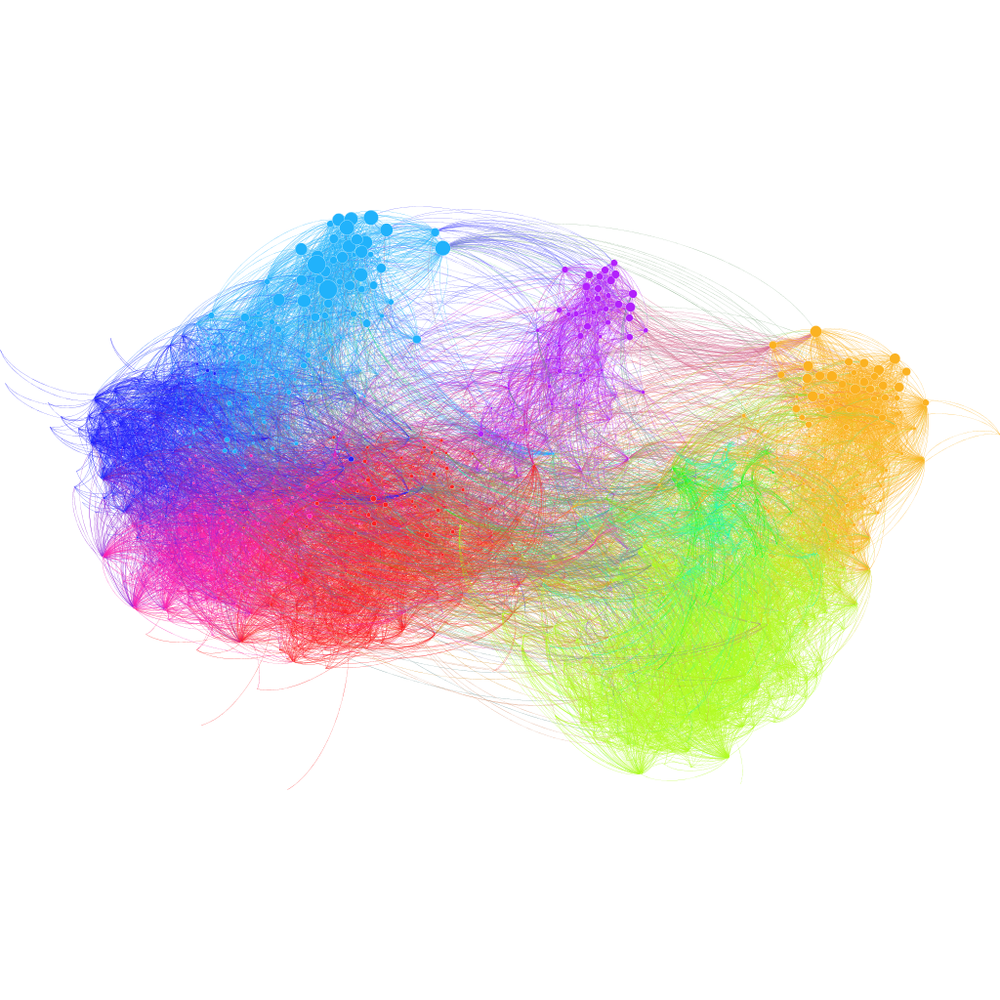
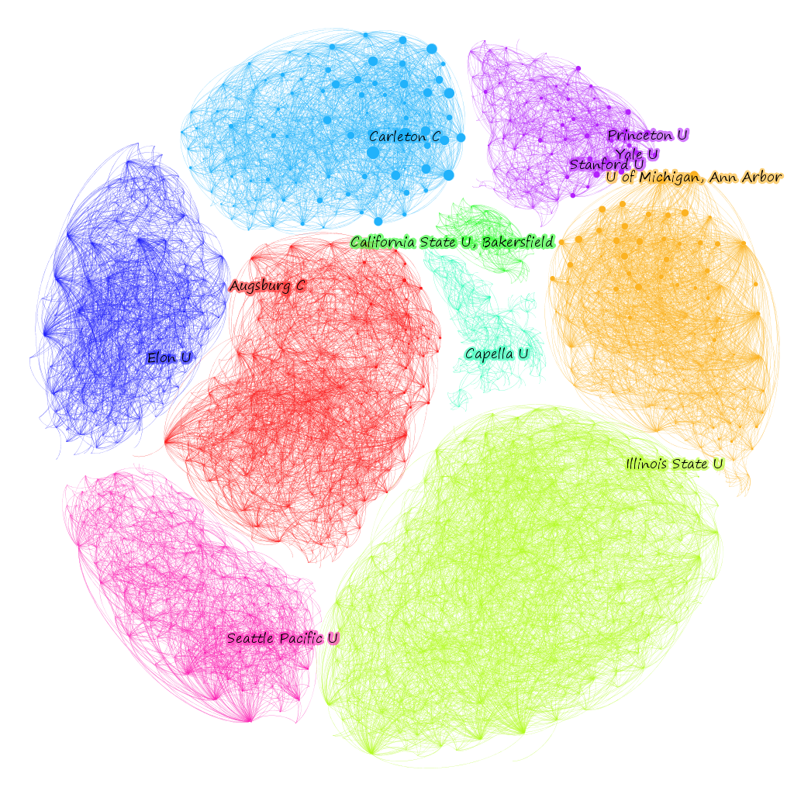
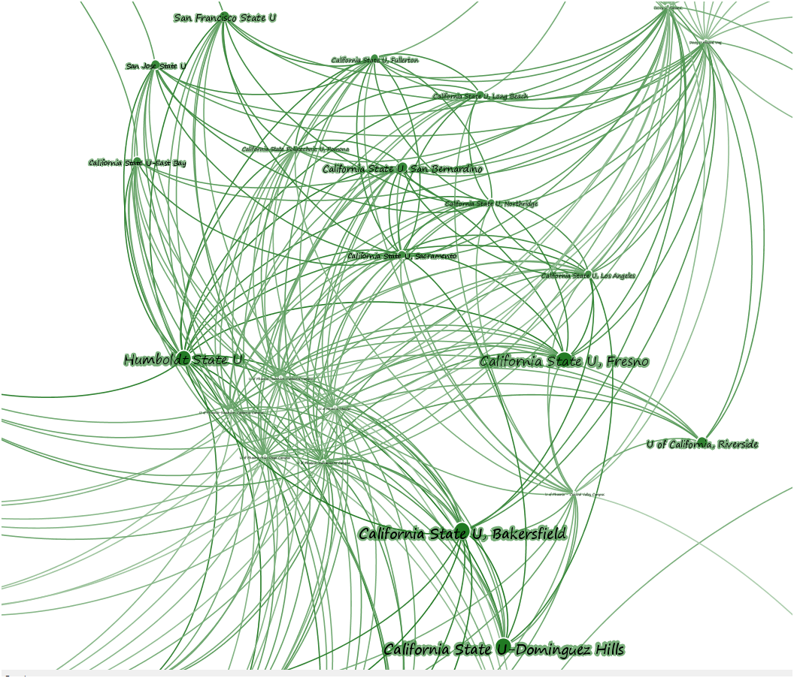

The Chronicle of Higher Education has posted an interactive network diagram of institutions. The data is based on the reports given to the Department of Education indicating a list of peer institutions for each university. It’s an interesting little exploration into the emergent attributes of a network, but it’s also an interesting dataset that outside researchers (especially those at schools like Stanford) would probably want to examine.
Because they used the gexfjs library for this interactive page, it was simple to download the entire dataset and play with it in Gephi. For those interested, you can find peers.xml here, but you’ll need to rename it peers.gexf to load it into Gephi. Mike Widner and I played around with this dataset this morning, and here are some other aspects that network analysis could reveal, as well as some of the issues with representing and working with network data without sufficient grounding in the basics of network analysis.
Schools are sized by their centrality, but centrality in a network has many different and sometimes competing or contradictory definitions. The Chronicle’s choice of PageRank over Eigenvector centrality deserves some examination, given that PageRank is typically used in Gephi because it is edge-weight aware, but this graph doesn’t have edge weights (which might be useful to implement and would help to correct for the oversampling from universities that claim many, many peer institutions). But it makes sense from another point of view, in that the use of PageRank naturally penalizes nodes with many connections, whereas other centrality scores like Eigenvectory centrality assume that this kind of “gaming the system” doesn’t take place. As a result, universities that claim few peers are rewarded by this measurement of centrality. At least in this sense, snootiness is statistically quite useful.
The network is a directed graph where a link from one institution claiming to be the peer of another is not necessarily (and often simply not) reciprocated. One issue with the Chronicle’s visualization is that it conflates in-links with out-links. In other words, the links an institution’s self-reported peers are indistinguishable from other institutions that claim that institution as a peer. Take Stanford as an example: it claims 12 peers, yet clicking on Stanford in the Chronicle’s visualization shows many more connections. It is impossible to determine from the graph itself which institutions Stanford claims as peers and which claim Stanford, and forces one to examine the long list at the side.

Here, then, is an alternate version that makes this distinction:

The universities in the inner ring (in purple) are those Stanford claims as peers. Those in the outer ring (in blue) are those that claim Stanford. The font size represents the Page Rank value of each institution: larger fonts indicate a higher ranking. This image fits very well with our expectations of who Stanford would claim as a peer institution while also showing the aspirations of others.
For the whole graph, the Chronicle not surprisingly used Gephi’s “default” force-directed algorithm to lay out the network. There are other ways to lay out networks, and I’ve grown partial to plotting networks on XY axes based on node attributes, but force-directed layouts and especially ForceAtlas2 are traditional. What this means is that the network’s strange, hierarchical organization, with highly-ranked schools literally found on top of three distinguishable pillars, is actually a part of the network–except for the “top” part, since the network could be rotated as a whole and still remain unchanged, but being at the end of a cluster of nodes and having (at least what seem to be visually easily distinguished) clusters is really quite interesting. To see if there is a significant community signal in the network that reflects our visual appraisal, we can test for modularity using Gephi’s built in modularity function. The graph has ~.57 modularity, which is a somewhat weak community signal, likely caused by the over-reporting universities, though they do have an interesting configuration. Coloring the network by community and turning the edges on makes it look much less sedate.

The communities themselves are, as network communities tend to be, very interesting. It would take too much time to explore each exhaustively, but I’ve labeled the most central (according to PageRank) university in each module. In the case of the Ivy and Ivy-like schools, I labeled the top three (I work for one of them, and wouldn’t want to leave it out).

Looking closely at one of these modules, you can see the difference between Eigenvector centrality and PageRank. First sizing the nodes by PageRank:

And then Eigenvector:

While this could go on and on, I think that’s enough to demonstrate the need to really engage with data-driven journalism like this, which is only possible if the data is clearly marked and accessible. To help support that, I’ve taken the gexf I’ve been working on above and left it here so that other researchers can examine this data.